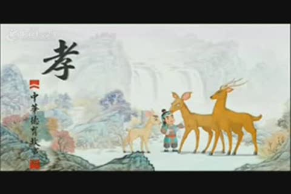

王览争鸠

晋朝时候。有个着名友悌的人。姓王名览。他的母亲打他不同母的哥哥叫王祥的时候。王览每每流着眼泪。抱了哥哥。他的母亲虐使王祥和王祥的妻子。王览同了他的妻子。也一定赶去同做。后来王祥在社会上。渐渐地有了名誉。王览的母亲很妒忌他。就用毒酒要药死他。王览知道了。就拿了药酒来抢着喝。他的母亲就急急忙忙把药酒夺来倒在地上。因为了这一件事。他母亲的心里也就感悟了。当时吕虔有把佩刀。看佩刀上面刻着的字。带了这佩刀的人。做官可以做到三公。吕虔就把这佩刀送给王祥了。王祥拿来给了弟弟。果然后代的子孙。做公卿大官的有九代。